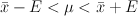

Statistics > Confidence Intervals > 1-Population Mean
This utility computes the confidence intervals for a population mean
in one population, whether the population standard deviation is
known or unknown. The confidence intervals are calculated using the
following formulas:

where when
population standard deviation  is known
is known
or when
is unknown;
 = sample mean
= sample mean
μ = population mean
s = sample standard deviation
= inverse cumulative
probability of the Student's t distribution at
1 - α/2.
 = inverse cumulative
probability of the z distribution at
1 - α/2.
= inverse cumulative
probability of the z distribution at
1 - α/2.
To use the utility, select Statistics > Confidence Intervals > 1-Population Mean.
- If population standard deviation is known, select the Known
radio button, and enter the standard deviation in the given text box.
Otherwise, select the Unknown radio button.
- You can provide sample data in a column of the Datasheet or provide
summary data. If your sample data is available in one column, select
the Samples in column: radio button, and enter the column names
(Enter valid column names separated by space.
For a continuous range of columns, separate using dash (e.g. C1-C30).).
- If individual sample data is not available, you can provide summary
information of the sample data. In this case, select the Summarized
sample data radio button. Enter the sample size, mean, and
standard deviation (only if population standard deviation is unknown) in
the provided text boxes.
- Enter the confidence level (between 0 and 1) in the
Confidence level: text box.
- Click Ok to compute the confidence interval. The results
will be shown in the log window.